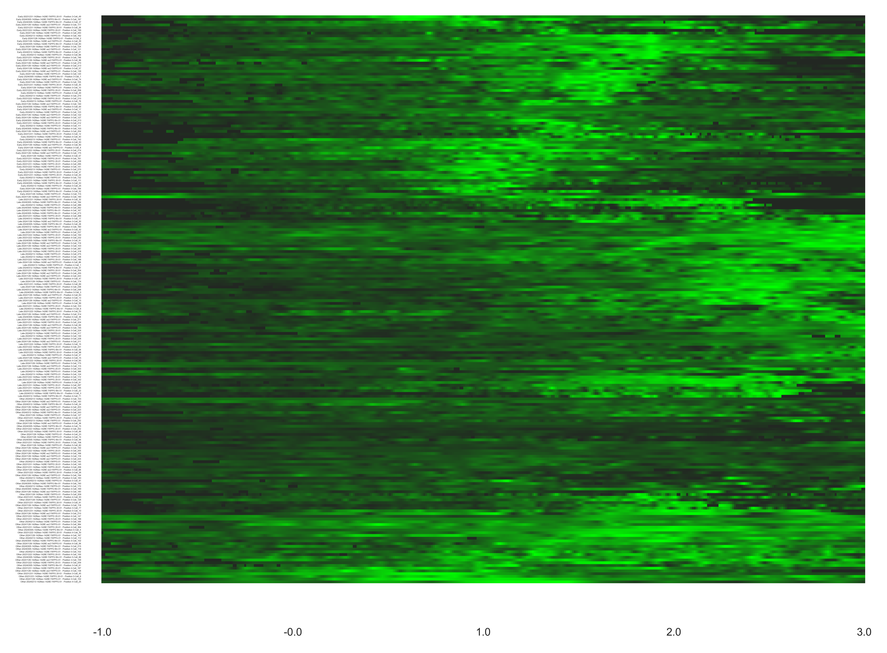

RNSAsubpop Script Documentation
The RNSAsubpop script processes an RNSA file to automatically classify positive cells into predefined subpopulations based on their signal intensity in specific time windows. It enables efficient categorization, visualization, and clustering of cellular data.
There are two versions of the script:
- RNSAsubpop – Divides cells into predefined subpopulations based on signal intensity and generates output files.
- RNSAsubpop_clustered – Performs additional hierarchical clustering within each subpopulation after subpopulation selection, enhancing visualization and pattern detection.
Key Tasks
- Read and Process Input Files
- Reads the RNSA and Replication Summary files, both expected to be obtained after running ScreenRNSA script.
- Loads the 'Positive' sheet from the Replication Summary and processes the third sheet from the RNSA file.
- Subpopulation Selection
- Divides cells into three predefined subpopulations (Early, Late, Other) based on intensity thresholds during specific time windows.
- Filters out cells with excessive missing data (above the threshold
max_nans).
- Generate and Save Subpopulation Data
- Creates and exports Rep Summary for each subpopulation.
- Generates and exports RNSA files specific to each subpopulation.
- Generate and Save Heatmap (Both Versions)
-
RNSAsubpop:
- Creates a heatmap visualizing subpopulation data.
- Saves the heatmap as a PNG image.
-
RNSAsubpop_clustered:
- Performs hierarchical clustering within each subpopulation before heatmap generation.
- Saves the clustered heatmap as PNG and PDF files.
- Save Subpopulation Data for Heatmap
- Creates an updated Excel file containing the processed RNSA data for each subpopulation, structured for heatmap generation and further analysis.
How to Use RNSAsubpop
Step 1: Edit Parameters in the Script
Modify the following parameters before running the script.
• Specify the RNSA File Location
Set the folder and filename of the RNSA file. The script requires an RNSA file generated after running the ScreenRNSA script. The script will automatically detect and process the corresponding Replication Summary file.
folder = r'path_to_your_folder'
rnsa_filename = 'your_rnsa_file.xlsx'
• Define Subpopulation Parameters
By default, the script automatically assigns cells into three predefined subpopulations based on their signal intensities during specific time windows.
Default Subpopulations and Classification Conditions:
| Subpopulation | Window 1 (-0.5 to 0) | Window 2 (0.6 to 1.6) | Window 3 (2.2 to 3) | Missing Data Threshold |
|---|---|---|---|---|
| Early (pop1) | Mean intensity < 0.35 | Mean intensity > 0.3 | Mean intensity < 0.4 | Below 75% in each window |
| Late (pop2) | Mean intensity < 0.35 | Mean intensity < 0.4 | Mean intensity > 0.3 | Below 75% in each window |
| Other | N/A | N/A | N/A | Below 75%, does not fit Early/Late |
Note: Time windows, subpopulation names, and intensity thresholds are configurable.
time_windows = ([-0.5, 0], [0.6, 1.6], [2.2, 3])
pop1_thresholds = (0.35, 0.3, 0.4)
pop2_thresholds = (0.35, 0.4, 0.3)
pop_names = ['Early', 'Late', 'Other']
• Set Missing Data Threshold
Define the allowed percentage of missing data:
max_nans = 75 # Exclude cells with more than 75% missing data in time windows
• Configure Heatmap Output
Define the subpopulations to appear in the heatmap:
heatmap_pops = ['Early', 'Late', 'Other']
• Configure Summary Chart Parameters
Set the appearance of the RNSA summary chart:
colors = ['red', 'orange', 'lime'] # Colors for the chart
rnsa_x_axis = [-1, 3] # X-axis range
rnsa_y_axis = [0.1, 0.8] # Y-axis range
Step 2: Run the Script
After editing the parameters:
- Save the script.
- Run the script in your Python environment (e.g., Command Line, Jupyter Notebook, PyCharm).
Step 3: Output Files
The script generates multiple output files, saved in the same folder as the original RNSA file. These files include subpopulation-specific data and heatmap visualizations.
Replication Summary files for each subpopulation:
• your_RepSummary_file - All.xlsx
• your_RepSummary_file - Early.xlsx
• your_RepSummary_file - Late.xlsx
• your_RepSummary_file - Other.xlsx
RNSA files for each subpopulation:
• your_rnsa_file - All.xlsx
• your_rnsa_file - Early.xlsx
• your_rnsa_file - Late.xlsx
• your_rnsa_file - Other.xlsx
Excel file containing all subpopulation data for heatmap generation:
• your_rnsa_file - Subpopulations.xlsx
A heatmap visualization of subpopulations, saved as an image:
• your_rnsa_file - Subpopulation Heatmap.png
A clustered heatmap visualization of subpopulations as a PDF (for RNSAsubpop_clustered version of the script):
• your_rnsa_file - Subpopulation Heatmap.pdf
Example Configuration
Below is an example setup for running the script.
The script will:
- Assign cells to subpopulations (Early, Late, Other) based on intensity thresholds.
- Exclude cells with more than 75% missing data in the specified time windows.
- Plot a heatmap visualization of subpopulations
""" Parameters """
# Location and filename of the relevant RNSA file.
folder = r'C:\Project\RNSA_Results'
rnsa_filename = 'Merged_Project_Results - RNSA.xlsx'
# Define time windows and thresholds for subpopulation selection
time_windows = ([-0.5, 0], [0.6, 1.6], [2.2, 3])
pop1_thresholds = (0.35, 0.3, 0.4)
pop2_thresholds = (0.35, 0.4, 0.3)
# The maximum allowed percentage of missing data in the examined time windows.
max_nans = 75
# Names of the subpopulations (must be 3 subpopulations).
pop_names = ['Early', 'Late', 'Other']
# Which of the above populations should appear in the final heatmap.
heatmap_pops = ['Early', 'Late', 'Other']
# Parameters for RNSA summary chart.
colors = ['red', 'orange', 'lime']
rnsa_x_axis = [-1, 3]
rnsa_y_axis = [0.1, 0.8]
Expected Output
• C:\Project\RNSA_Results\Merged_Project_Results - Rep Summary - All.xlsx
• C:\Project\RNSA_Results\Merged_Project_Results - Rep Summary - Early.xlsx
• C:\Project\RNSA_Results\Merged_Project_Results - Rep Summary - Late.xlsx
• C:\Project\RNSA_Results\Merged_Project_Results - Rep Summary - Other.xlsx
• C:\Project\RNSA_Results\Merged_Project_Results - RNSA - All.xlsx
• C:\Project\RNSA_Results\Merged_Project_Results - RNSA - Early.xlsx
• C:\Project\RNSA_Results\Merged_Project_Results - RNSA - Late.xlsx
• C:\Project\RNSA_Results\Merged_Project_Results - RNSA - Other.xlsx
• C:\Project\RNSA_Results\Merged_Project_Results - RNSA - Subpopulations.xlsx
• C:\Project\RNSA_Results\Merged_Project_Results - RNSA - Subpopulation Heatmap.png
For the clustering version, an additional PDF heatmap is created:
• C:\Project\RNSA_Results\Merged_Project_Results - RNSA - Subpopulation Heatmap.pdf
Hierarchically Clustered Heatmap of Detected Early, Late, and Other Subpopulations
Figure: Example of a heatmap with hierarchical clustering applied to Early, Late, and Other subpopulations in RNSA data
By following these steps, the script automatically classifies cells into predefined subpopulations based on intensity thresholds applied within specific time windows and generates a heatmap for visual representation.
This automated approach enables efficient analysis and visualization of RNSA data, facilitating the identification of meaningful trends in cellular behavior.